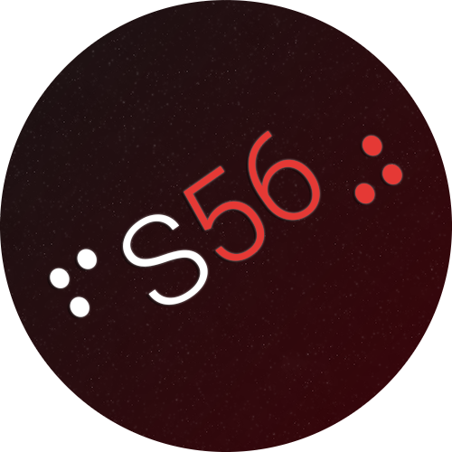
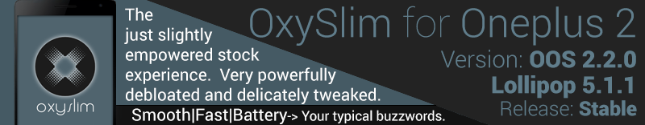

Sewer's Project Index
A software dev by day and game modder/hacker by night.
Find all of my projects here.
About
This page contains an easy to search index of a vast majority of my public, open source projects.
Search can be quickly accessed by pressing / key on keyboard.
About Me
Hi, I'm Sewer, an open source library author by day and singleplayer game modder/reverse engineer by night.
As long as, can remember, I've been tinkering with both software and hardware; originally being just an end user, with time, becoming a software developer myself.
My first piece of what I could consider 'development work' growing up, would have been in 2012 with the Xperia Play, my first Android Device I received as a 13 year old. At the time, Android devices were very hardware constrained, with a single ~1GHz core and 512MB RAM (or less!), so as a tinkerer, many hardware enthusiasts ran Custom ROMs for better performance.
As a power user, I became one of those ROM developers, creating stock-based ROMs such as Gin2JellyBean Extended, for the Play and OxySlim for the OnePlus 2, also being a minor contributor of halogenOS, mostly providing the artwork used there.

My inspiration for starting programming for the first time came in 2015. I had a bit of nostalgia for a game I played as a child, Sonic Heroes; so I decided to try tinkering with it. My first experiences involved reverse engineering the Object Placement format using HxD; during the same time I got the opportunity to start picking up C# at school.
In 2017, I met Igor Seabra, who also had passion for the game and thus, between the two of us, we spent the year cracking the game wide open; bringing even custom levels to the table and ultimately releasing Heroes Tweakbox, as a celebration of that year's achievements.
From there onwards, reverse engineering and modding games has became a hobby of mine, jumping in between different games to help various communities out; while also doing general open source library work and contributions. My work spans quite a few games, but I'm probably best known for Reloaded-II, the next generation .NET based mod loader.
As for what I do these days? I work at Nexus Mods while in my spare time, I still release new modifications, patches and libraries somewhat regularly. I also occasionally contribute to others' Open Source Projects (My GitHub Activity).
Example projects I've contributed to include DotNetCorePlugins, LiteNetLib, SharpGenTools, il-repack, vcdiff and even the .NET Runtime itself.